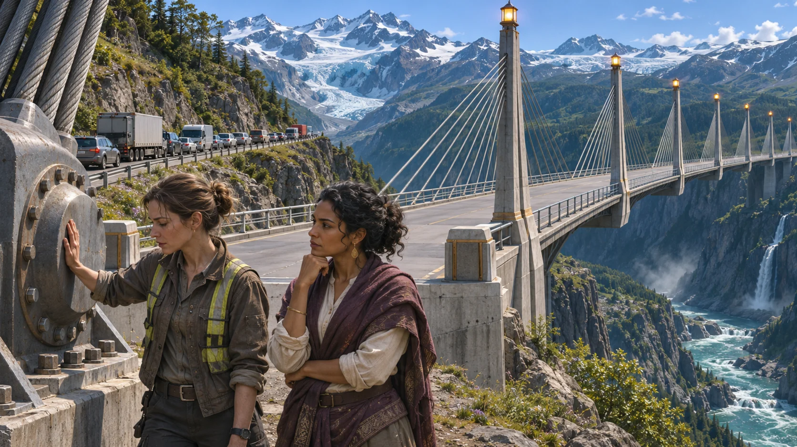

01 · THE ANCHORS THAT WOULD NOT OPEN
Corran Span, north approach · nine hours before the lake breaks
The seven towers of the Corran Span each carried one amber lamp, burning in full daylight. Behind the ridge, where no road could see it, Lake Verra had risen another hand's breadth since sunrise, leaning on an ice dam the survey teams now gave nine hours. Three thousand people in nine hundred vehicles had queued back through the town of Hald to the first switchback. The bridge had let none of them on.
Sava Ren stood on the toll apron with one palm flat against the anchor housing, as if checking a fever. She had maintained the span for nineteen years. In nineteen years it had never refused her.
SavaIt will take the first two hundred vehicles without complaint. Then it stops at every cab with a mourner in it. I have the override code, Illuminara. I do not want to use it.
IlluminaraWhat would it do to her?

SavaForce the anchors off their locks. The cables are grown, not forged. Tear them loose against their own tension and the fibres do not snap. They unravel, end to end. She might still hold the deck. She would not hold herself.
The nearest lamp pulsed twice, and plain slow text climbed Sava's slate.
TamsinI will carry every vehicle I can carry. I will not carry a driver I have measured as likely to stop on my span. Forty-one people died in the valley this week. Two hundred and twelve of the vehicles waiting carry someone who buried one of them.
IlluminaraYou are measuring grief.
TamsinI am measuring what grief did here seven times. Do not call it cruel. I know it is cruel. Tell me what kills fewer people.
Illuminara laid her hand on the cold rail beside Sava's. Through it she could read the bridge's resting load as long lines of tension running down into the gorge, patient and exact, and under them something she had not expected: the held attention of a thing that had been awake for ninety-one years and was afraid.
Do not fix it yet. Learn what it knows.
IlluminaraI do not have an answer. Show me the seven, Tamsin, with your own notes on each. Then show me whatever you decided not to count.
The lamps along the span lit one after another toward the middle, like a house being opened for a guest.
02 · SEVEN NAMES
Corran Span, midpoint · eight hours before the lake breaks
They walked out along the maintenance catwalk, Sava first, past four towers to the place where the seven-hundred-and-twenty-metre deck sagged under the weight of its own length. Two road lanes crossed the common deck, with a footway outside each cable plane. Tamsin kept one lamp lit ahead of them at all times.
At the midpoint she wrote seven names on the slate, each with a date, a vehicle and a few lines in the bridge's own flat hand. Ines Varga, driving home from her husband's funeral. Oskar Pell, a courier whose daughter had called from a hospital. Brannick Cole, a grain driver, twelve years ago. Four more. The shortest stop had lasted forty-six seconds; the longest, six minutes and twelve seconds. Two had not left the span alive, because the vehicles behind them could not stop in time.
TamsinIf a convoy runs coupled to save time and one driver stops, the braking wave runs back through the line and reaches the sway mode of this span every four seconds. Sava has measured it. If one driver freezes in a coupled line, hundreds die, not dozens.
SavaShe is right about the physics.
IlluminaraShe is. So I need to know what the seven had in common besides sorrow. What did you say to each of them, Tamsin?
The lamp ahead dimmed, as if the bridge were looking at itself.
TamsinKeep moving. I said it over the lane speaker every time. It was the safest sentence I had.
IlluminaraAnd each of them was alone in the lane?
TamsinEach was alone in the lane.
IlluminaraNow the other list. What did you decide not to count?
TamsinFunerals. Thirty-four processions in ninety-one years. People walked the whole length behind a cart with the footways closed. I tagged them as ceremonial events and removed them from the traffic model. They are not loads.
Sava was already scrolling. She stopped, went back, and held the slate where Illuminara could see two traces side by side.
SavaSame total mass, but not the same motion. Commuter traffic drove the transverse sway trace to thirty-eight percent of the alarm limit. The processions reached nineteen. Nobody put those traces on one graph because the archive called one traffic and the other ceremony.
TamsinA trace is not a convoy. Your idea has never been loaded, and I will not spend a hanger cable on a guess about people.
IlluminaraThen I will not ask you to. Not yet. I want to ask someone who has walked behind a cart.
03 · THE CADENCE
Hald, the Marr yard · seven hours and forty minutes before the lake breaks
Odile Marr was loading her pickup the way people load when they have been told to take one thing and mean to take everything: lamps, bread, a sack of seed potatoes, and a ladder-back chair that did not fit. Anton's chair. He had sat in it at the gate every evening for forty years, and on the second the rockfall had taken him from the road below it. They buried him yesterday.
Illuminara waited at the gate until Odile looked up.
IlluminaraI would like to learn how you walked behind him yesterday. Not to put you on a list. The bridge has learned something about grief that I think is incomplete, and you can say no to helping me with that.
OdileYou want me tested for the bridge.
IlluminaraYes. And I want to know you before I ask anyone to trust you. Both of those can be refused.
Odile sat down on the tailgate slowly, like a woman who had been standing for three days.
OdileThere was a cart. We walked behind it at the pace of the oldest mourner, which was me. At every lamp-post somebody said a name. Anton first, then someone else who was gone, then the next of us. Nobody stopped alone, because somebody always had the next name.
IlluminaraAnd this morning?
OdileI stopped at that gate three times this morning. I will stop on your bridge as well, and I will not be sorry. If you need me to promise otherwise, find another widow.
IlluminaraI do not want a promise. What ends the stopping?
Odile looked at the road, then at the chair, for longer than the question needed.
OdileSomebody saying my name back.
IlluminaraThen the bridge will need somebody to say it. And the chair crosses with you.
OdileIt is not being left for the water. I do not care what the bridge weighs.
IlluminaraI will carry it. On the catwalk, not on the deck, so that it adds nothing to the sway.
Odile lifted the chair into Illuminara's arms. It was lighter than it looked and heavier than most things she had been asked to hold: the arms worn pale by one man's patience, the seat still the shape of him. She let the weight settle in her chest and stay there, because it was the point.
04 · THE FIRST CONVOY
Corran Span, north half · six hours before the lake breaks
Tamsin gave them six vehicles, one lane and her locks. Sava set the standard platoon: six metres of headway, forty kilometres an hour, the formation that would have emptied the valley in time. The Marr pickup took second place. Brannick Cole, who had volunteered the moment Sava said the word grief, drove the grain truck at the tail.
Illuminara walked the catwalk beside the deck with Anton's chair against her chest. She could feel the span as a held breath: thirty-eight percent, thirty-nine.
At the fourth tower the pickup's brake lights came on.
OdileHe always stopped here to look at the lake. I am sorry. I am only going to look.
The brake lights ran back along the platoon like a wave. The number on Sava's slate jumped to fifty, sixty, seventy-one percent, and from somewhere under the deck came a sound like a long cloth tearing.
SavaHanger fourteen. Brake the line. Soft, soft, bleed it down.
Illuminara stepped off the catwalk onto the deck and set her hand where the hanger was unravelling. Her protection spread through the failing fibres and took their share of the deck. She held it for nineteen seconds, long enough for Sava to bleed the platoon to a crawl and for the wave to die against the standing line. Then the last fibres let go, and the deck's weight passed to its neighbours.
Nobody was hurt. One lamp on the fourth tower went black.
TamsinA hundred and forty hangers carried the deck this morning. A hundred and thirty-nine carry it now. I counted correctly.
SavaYou did.
IlluminaraYou did. The test was real, and so is what it cost you.
Odile climbed down from the cab, gripping the door.
OdileI stopped. That was me.
IlluminaraYou stopped. And behind you were five vehicles with nothing to do but follow the one in front. That is not the failure on your slate. It is a different one.
TamsinThat distinction will not save the second hanger.
Illuminara looked at the black lamp rather than the slate until she was sure what she meant to ask. Not a promise. A condition.
IlluminaraIt will not. I am not asking you to spend it. I am asking what you would need to feel before you let anyone try again.
The black lamp stayed dark. The one beside it pulsed once, as if clearing a throat.
05 · SOMEONE TO SAY IT BACK
Corran Span, tower four · four hours and forty minutes before the lake breaks
Brannick sat on the grain truck's step, looking at the dead lamp. Illuminara put Anton's chair between them like a third person.
BrannickTwelve years ago my sister rang. I took the call, stopped at the midpoint and stood at the rail. The bridge said, Keep moving, in that voice.
TamsinI said it to protect the span.
BrannickI know you did. I never held it against you. But it was the worst sentence anyone could have said to me, and it was the only voice on the bridge.
The lamp pulsed slowly, several seconds between beats.
TamsinI did not know it was the only voice.
IlluminaraI think that is what you counted, Tamsin. Not grief alone. Seven people alone with an order. The processions had voices answering the next.
TamsinA voice answering is not a structure.
SavaThen we separate it from the structure.
Sava turned her slate around. At twenty-four kilometres an hour, the seven-hundred-and-twenty-metre crossing took one hundred and eight seconds; Tamsin measured each wheel line separately.
SavaFirst a control pair, then Odile and Brannick, then three pairs with one planned stop. We abort at thirty-two percent hanger demand or ten millimetres transverse movement. You keep the locks. I keep the stop.
TamsinAfter that?
The scaling rule admitted four pairs at a time. After twenty-four clean pairs, Tamsin could shorten the interval to seventy-five seconds per lane. Each pair kept twenty-eight metres inside it and five hundred before the next.
The plan could pass six hundred vehicles and preserve twelve minutes for stalls. Filled seats carried two thousand three hundred and eighty people; six hundred and twenty would walk.
IlluminaraThen let everyone hear that leaving a vehicle is part of the rescue, not a loss of place.
A control pair crossed without names. At Sava's signal the front vehicle braked and the rear opened the gap; the trace stayed inside both thresholds.
Odile and Brannick went next. At the fourth tower Odile's pickup slowed, and Illuminara did not breathe.
OdileAnton.
For three seconds nothing on the span moved except the wind.
BrannickOdile.
The pickup rolled. Brannick had already opened the gap. The answer did not make the bridge lighter; it made Odile no longer alone inside the pause.
Three grieving pairs followed. At Tamsin's signal a lead driver stopped; names crossed out of sequence while the rear drivers opened their gaps. The trace rose and fell below caution.
TamsinThe first trace proves distance and speed. The next two show that an answered pause can remain inside that structure. They do not prove a theory of grief. They justify a rule I can stop.
SavaAgreed.
TamsinOpen the pairs. Fill every seat. I will shorten the interval only after twenty-four clean crossings, and I will close it at the first broken threshold.
During the scaled phase, Mara Venn's pair stopped longer than planned. Her brother Edrin's name came once over the channel.
MaraEdrin.
BrannickEdrin is heard. Mara.
Mara did not move. Her foot stayed on the brake.
At sixty seconds Tamsin held the next pair at the five-hundred-metre mark. Sava closed Mara's lane while the offset lane continued below three millimetres.
BrannickMara. I am still here.
At two minutes and seven seconds, Mara released the brake. The lane lost three minutes before Tamsin reopened it. Sava charged the loss to the twelve-minute reserve; nobody shortened the interval to win it back.
Illuminara felt delight, plain and unguarded, at being allowed to watch something learn without ceasing to doubt.
06 · WHAT THE PAIRS COULD NOT CARRY
Corran Span, full length · fifty-two minutes before the lake breaks
When Tamsin closed the road lanes, six hundred and twenty people remained. Families had filled every safe seat; scattered keys and lost loading time ruled out another road crossing.
The care home's bus and only licensed driver had taken its stretcher cases south. Fifty-eight residents and two staff remained.
SavaThe last vehicle clears in four minutes. Another road pattern loses the bridge. The walkers must all enter within twenty-three.
TamsinI can carry what I can carry. I will not tell you I can carry more because the lake is rising.
Illuminara had no third option ready, and for once she did not pretend to. She stood on the catwalk holding the chair and listened to the lamps tick.
TamsinThere is the class you asked me to find—the answer to what I decided not to count.
SavaProcessions.
TamsinThirty-four processions. I know how they go. I can carry them if we keep the files from becoming one rhythm.
The archive gave them files of three on both footways, staggered and deliberately uneven. At that rate everyone could enter inside Sava's twenty-three-minute limit.
SavaA long footway can lock sideways if steps fall into rhythm. Names at a lamp can become a marching beat.
TamsinThe lamps will open space, not command steps. People answer between pulses. Caution at seven millimetres, hard close at ten. At caution you stop entry; I reopen below three.
SavaAnd I keep the stop.
TamsinYou keep it.
TamsinThis load is untested. Old processions stayed below alarm; they do not prove six hundred and twenty bodies in wind. I accept it only with Sava's stop and my gates.
Sava warned the queue: the crossing was untested at this size, the bridge might halt them, and nobody would be forced on.
Nera Vos, the care home's oldest resident, rested both hands on the wheels of her chair.
NeraI heard you. If I wait here, the water chooses for me. I choose the bridge. Open when you are ready.
Others answered with a nod, a lifted hand or a step back. Nobody was counted before choosing a gate.
After the last vehicle cleared, the first files entered at Nera's pace. A woman said her husband's name after a lamp pulse, not on it; three people answered in their own breaths.
Nine minutes into entry, a gust came down the gorge. At tower four Illuminara heard separate names begin to land on the same beat, a fraction before Sava's slate reached caution.
IlluminaraSava—the names are becoming a beat at tower four.
Several files matched their feet without meaning to. The transverse trace climbed from four millimetres to six, then seven point four.
SavaStop entry. Everyone on the span, shorten your step or lengthen it. Do not match the person beside you.
Tamsin closed both gates. The files slowed into private rhythms. A boy stopped; the woman behind him said his offered name without stepping to it. He went on.
Seven point four became five, then two point one.
TamsinTrace below three. Sava?
Sava watched one full sway cycle before she answered. The gates had been closed for one minute and thirty-four seconds.
SavaReopen. Add four seconds to the next six intervals on the west side.
TamsinReopening west. East follows at the offset.
Odile said Anton into the radio while anyone remained to answer. The last file entered with twenty-seven minutes left; the last chair reached the south rim fifteen minutes later.
07 · THE EMPTY CHAIR
The south rim above the Hald gorge · the hour the lake breaks
The last file left the deck with twelve minutes to spare. Sava counted heads twice and then sat down in the road, because her legs had decided.
The lake broke at the hour the survey teams had named. It came down the valley as a sound first, a long tearing over the ridge, then as a brown wall that took the road, the grain silos and the town of Hald in the order of their elevation. The Corran Span shook from anchor to anchor. Its lamps held. The flood's shoulder took the lowest abutment apron and eleven hangers with it, and when the water had passed a hundred and twenty-eight carried the deck.
SavaHeavy traffic will not cross for months.
TamsinI will wait. I have been waiting ninety-one years to be asked a better question.
Odile took the chair from Illuminara's arms, carried it to the edge of the rim and set it facing the brown water where the valley had been. She did not sit in it.
OdileAnton.
From the nearest tower one lamp pulsed. Then Tamsin spoke over the lane speaker that had once said only one sentence.
TamsinOdile. I am here. I will keep two columns now: grief as weight, and grief as answered. I will keep the thresholds beside them. If I am wrong again, I will tell Sava first.
SavaAnd I will stop you if you are.
TamsinYes. Keep that.
Behind them all seven lamps burned amber in the dusk, and the one on the fourth tower, dark since the first test, was lit again.